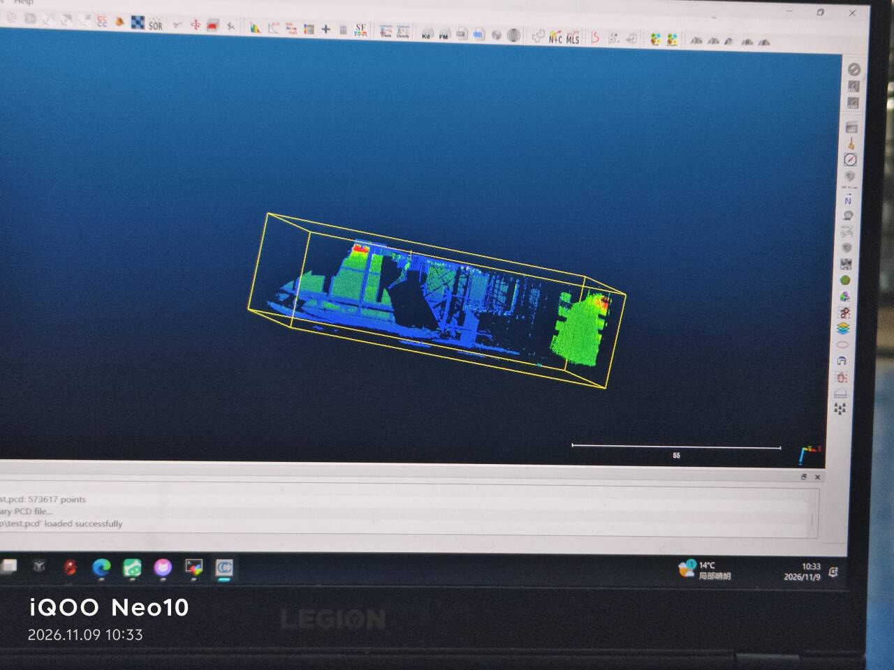

上一篇最后那张圆角矩形的俯视图，看着很完整。但它只在内存里—— 关掉终端、或者算法进程一退出，这张地图就没了，下次要看得重新走一遍。
这一篇是把机器里那张图变成硬盘上一个文件的全部过程， 以及打开它之后，我怎么判断这一圈到底走得值不值。
一、存之前先确认一件事：map_file_path 是相对路径
配置文件里写着：
pcd_save: pcd_save_en: true interval: -1 map_file_path: "./test.pcd"
那个 ./ 是关键。它是相对于「你敲下 launch 命令时终端所在的目录」，
不是相对于 FAST-LIO 的源码目录，也不是相对于配置文件。
这意味着：你在 ~ 目录启动，地图就落在 ~/test.pcd；
你在 ~/fastlio_ws 启动，就落在 ~/fastlio_ws/test.pcd。
同一条命令，在不同目录执行，产出物跑到不同地方——而且它不会告诉你存哪了。
map_file_path: "/home/<用户名>/fastlio_ws/src/FAST_LIO_ROS2/PCD/test.pcd"改完记得确认读的是这一份（
--symlink-install 那个坑），然后重启 FAST-LIO 才生效。
二、存：先找服务，再调服务
FAST-LIO 不是自动存的，要手动触发。先确认服务在不在：
ros2 service list | grep map
应该能看到 /map_save。看到它之后再调：
ros2 service call /map_save std_srvs/srv/Trigger
返回里 success: True 就是存好了。然后去确认文件真的落地了：
ls -lh ~/fastlio_ws/src/FAST_LIO_ROS2/PCD/ ls -lh ./test.pcd # 如果没改绝对路径就用这个找
这一步不能跳。success: True 只表示服务调用成功，
不表示文件写成功。如果目录不存在、或者没有写权限，
服务照样会返回，文件却没有——这种事我遇到过不止一次，
在别的场景里也是同一个模式：接口返回成功 ≠ 结果落地。
三、为什么我用 CloudCompare，而不是 pcl_viewer
教程里给的查看方式是：
pcl_viewer ~/fastlio_ws/src/FAST_LIO_ROS2/PCD/test.pcd
它能用，但功能很有限：只能转视角看，量不了尺寸，看不了点数，
而且要在板子上装 pcl-tools——在这类 ARM 板子上装 PCL 全套，
本身就是一件很重的事（这也是上一篇那个 libusb 符号冲突的来源之一）。
我改用 CloudCompare 的理由很实际，按重要性排：
| 需求 | pcl_viewer | CloudCompare |
|---|---|---|
| 看形状 | 可以 | 可以 |
| 看总点数 | 不行 | 状态栏直接显示 |
| 量距离、量尺寸 | 不行 | 可以，工具齐全 |
| 裁剪、切剖面 | 不行 | 可以，这是判断墙面直不直的关键 |
| 在笔记本上跑 | 要装 PCL 全套 | 有现成安装包，跟 ROS 无关 |
最后一行是决定性的。把 pcd 文件从板子上拷到笔记本， 用 CloudCompare 打开——验收这件事本来就不该占板子的资源， 板子只负责采集和建图。
打开之后是这样：
test.pcd 的过程。
底部那行 test.pcd loaded successfully 是它唯一会给的成功提示；
右边那个黄色框是裁剪工具，用来框掉无关区域、或者单独量一块的范围
对应的静态截图，能看清状态栏：

[CloudCompare] 是软件名，
后面那行是加载结果。除此之外，这张图里的颜色全部是高度映射，
和精度没有任何关系
四、573017 这个数字，说明什么、不说明什么
这是我做这个项目以来，第一次拿到一个可以拿来对账的硬数字。 但正因为它看起来精确，反而容易过度解读。分清楚两边：
| 它能说明 | 它不能说明 |
|---|---|
| 这一次保存的地图里确实有 57 万个点，文件不是空的 | 地图准不准——点数多不等于位置对 |
| 点云密度的大致量级，可以用来估「走一圈值多少数据」 | 覆盖面积多大——同样 57 万点，铺满 10 平米和 100 平米是两回事 |
| 和上一次保存的对比，能看出这次是不是少走了路 | 有没有重影、有没有漂移——这些必须看形状 |
| 文件大小是否合理，能不能塞进一张 SD 卡 | 建图质量好不好 |
右边那一列才是重点。点数是一个「有多少」的指标，精度是一个「对不对」的指标， 这两件事没有换算关系。一个把整面墙复制成两层的错误地图， 点数可能比正确的还多。
真要用它做判断，得配一个分母。用 CloudCompare 量出地图的覆盖面积， 除一下就是点密度：
五、怎么判断一张点云图是好是坏
这是我这一周真正学到的东西，也是教程里不会写的部分—— 因为教程的终点是「能出图」，而实际工作的要求是「这张图能不能用」。
按可靠性从高到低排，有四个判据：
| # | 看什么 | 好的样子 | 坏的样子说明什么 |
|---|---|---|---|
| 1 | 闭合处 | 回到起点，同一面墙只有一层 | 两层、错开一段 → 累积漂移，且能直接量出漂了多少 |
| 2 | 墙面的厚度 | 切一个剖面，墙面是一条细线 | 线变宽、变成带状 → 位姿在抖，或者外参不对 |
| 3 | 地面的平整度 | 同一块地面在同一个高度上 | 地面像波浪 → 俯仰角估计在漂，通常和 IMU 有关 |
| 4 | 悬空的孤立点 | 没有 | 一串飘在空中的点 → 玻璃、镜面反射，或者有人走过 |
第 2 条是最有用的一个技巧，也是 CloudCompare 值得用的真正原因： 把地图转成侧视图、切开一道剖面，墙就不再是一面「墙」，而是一条线。 线的粗细就是误差，肉眼就能估出量级，不需要任何计算。
这一条我是在别的地方学到的，但用在这里刚好： 判断一个三维结果准不准，最有用的往往不是三维视图，而是把它降一维看。
六、pcd 这一环的四个坑
| # | 现象 | 当时的判断 | 实际原因 | 怎么确认 |
|---|---|---|---|---|
| 1 | 服务返回成功，但找不到文件 | 存到别的地方了 | map_file_path 是相对路径，落在启动时的当前目录 |
改成绝对路径；或 find ~ -name "*.pcd" -newermt "-10 minutes" |
| 2 | 改了 map_file_path，还是存到老地方 |
配置没生效 | 读的是 install/ 里的旧副本 |
编译加 --symlink-install；改完要重启 FAST-LIO |
| 3 | pcd 打开只有几个点 | 文件损坏 | 存的时候地图还没累积完，或者在建图刚开始就调了服务 | 走完一整圈再存；对比 CloudMap 在 RViz 里的样子 |
| 4 | 地图里凭空多出一面墙 | 算法算错了 | 玻璃/镜面反射，点被「折」到了不存在的位置 | 回到现场看那个方位有什么；换角度重走一段对比 |
第 4 条要特别说明一下：它不是 bug，也不能靠调参解决。 雷达打在玻璃上，一部分穿透、一部分反射，算法无法分辨哪个是真的。 能做的是知道它存在、建图时避开，或者在后期手动裁掉。 把它当成「传感器物理限制」而不是「程序错误」，判断会清楚很多。
七、这四篇连起来是什么
从第一周到现在，这条链走完了：
- 让数据出来（第 1–2 周）——网段、host_ip、launch 选型、Fixed Frame。 产出是 RViz 里一团能看的点云。
- 让数据可复现（第 3 周）——补上 IMU、四道体检、动作规范。 产出是一份可以反复用的 bag。
-
让算法跑通（第 4 周）——编译、配置、
camera_init。 产出是一张会随着走动能看见它在长的地图。 - 让结果可验收（本篇）——pcd、CloudCompare、四个判据。 产出是一个文件和一套判断它好坏的方法。
回头看，真正花时间的从来不是算法本身。 四篇里写到的坑一共二十个，其中属于「代码写错」的一个都没有。 全部集中在三件事上：数据有没有到、配置读的是哪一份、坐标系对不对。 这三件事有个共同点——它们都不报错。
所以这个系列如果只留一句话，我留这句： 不报错的失败最贵。 遇到问题，先花五分钟把「现在卡在哪一层」定下来， 比直接改参数快得多。
八、下一步
这条链到这里是通的，但它离「无人机能自己飞」还差得远。明确的缺口有四个：
-
TF 树还没建。
现在只有
camera_init，没有base_link、没有body。 要把位姿交给飞控，这棵树必须先立起来。 - 还没和飞控对接。 位姿要经 MAVROS 送进 PX4，中间涉及坐标系约定 （ENU 与 NED 的转换，这一步错了飞机就会往反方向飞）。
- 还没上机飞。 所有数据都是人拎着雷达走的。飞行带来的振动、加速度、快速姿态变化， 是完全不同量级的输入。
- 没有回环检测。 所以漂移只能控制、不能消除。要走大场地，这一块迟早要补。
下一篇打算从 TF 那棵树开始写——因为它同时是两个东西的前提： 位姿要交给飞控，得先有树；外参要真正固定下来，也得先有树。